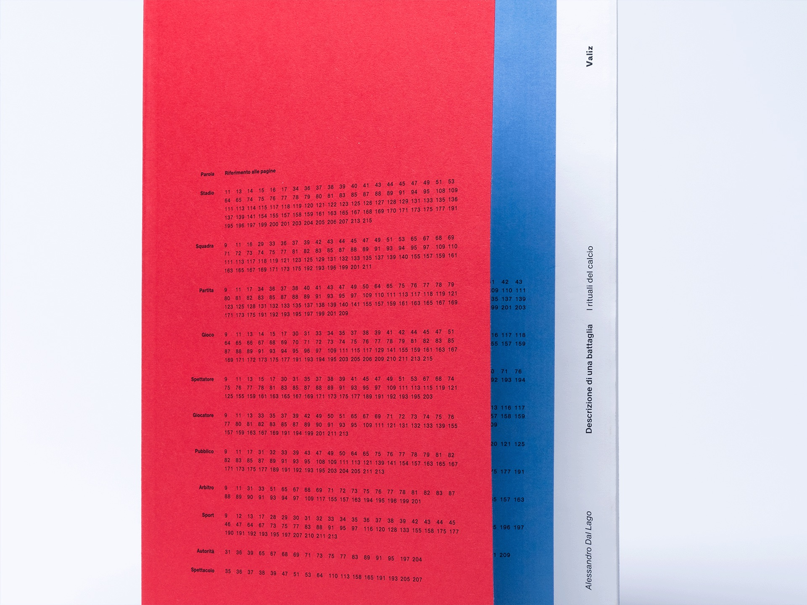
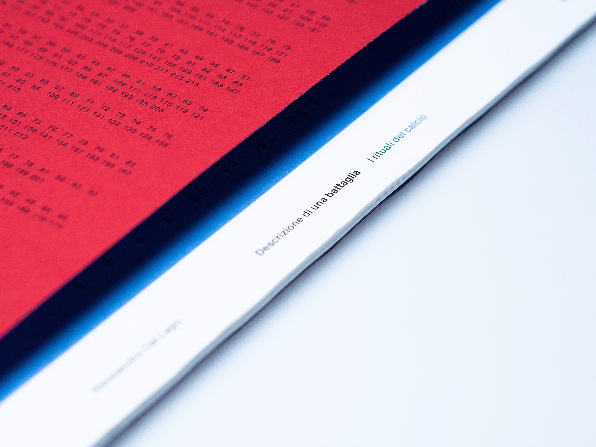
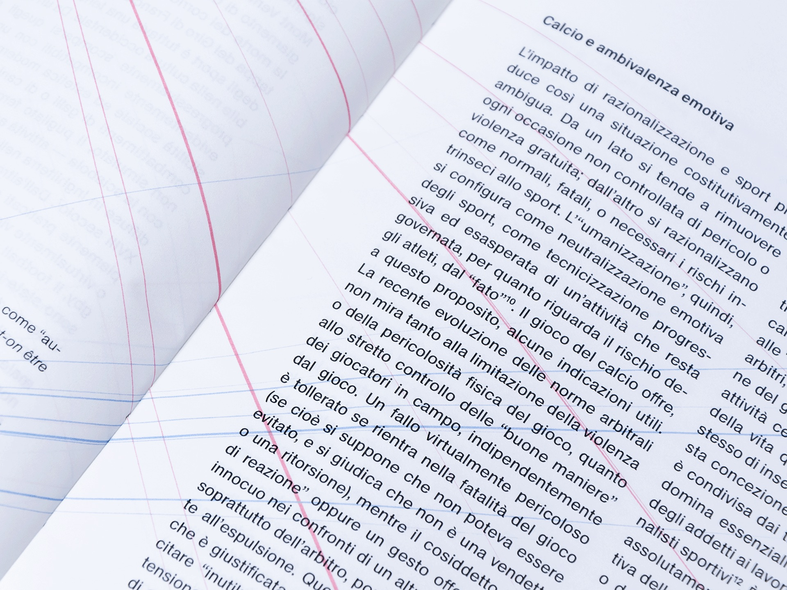
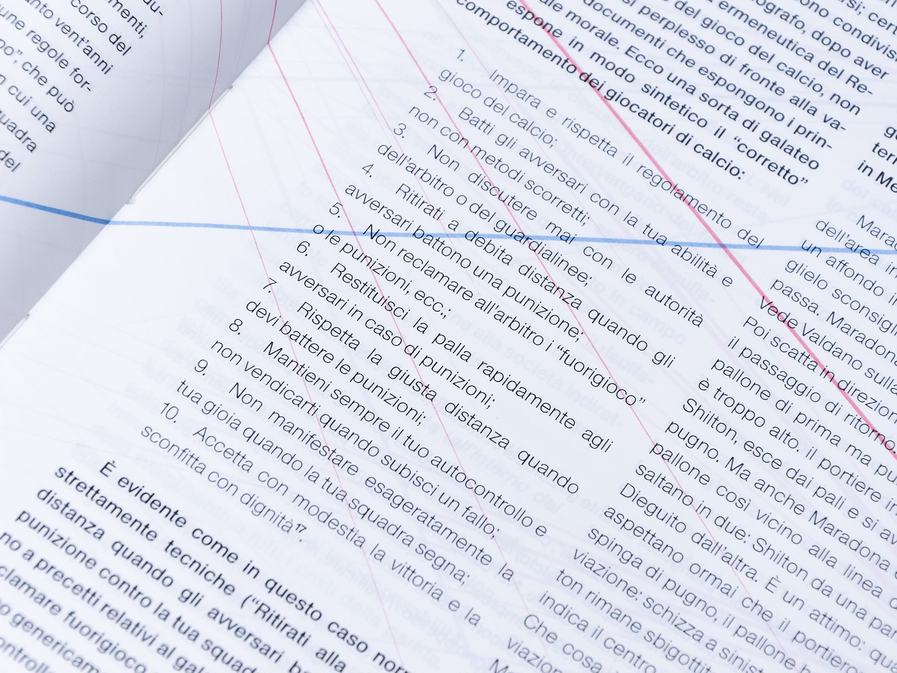
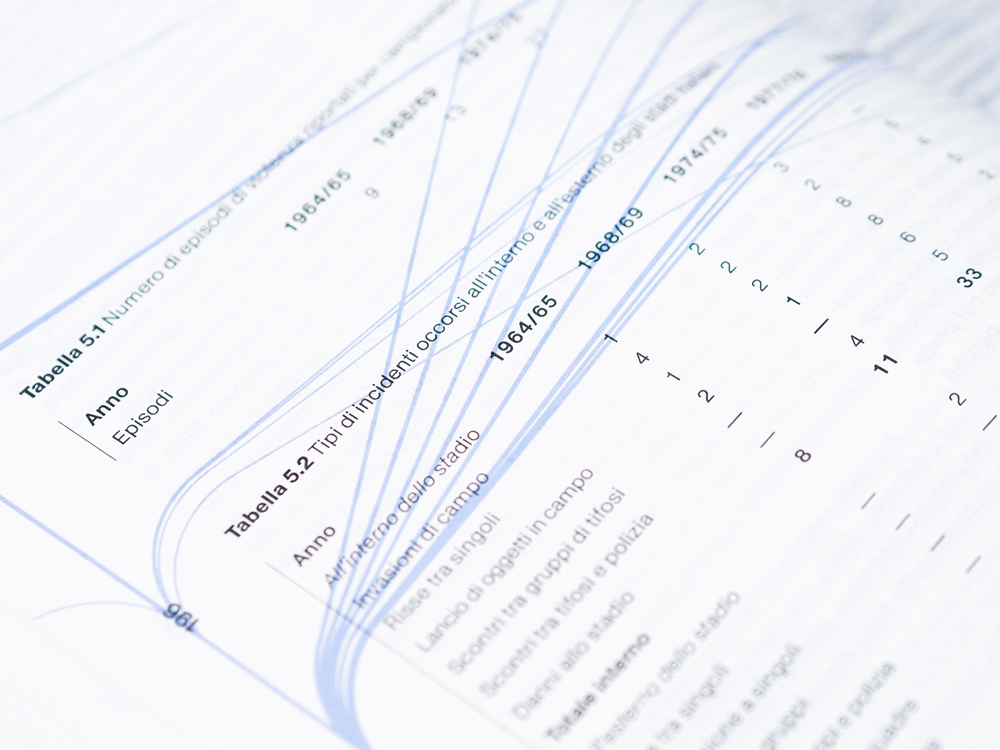
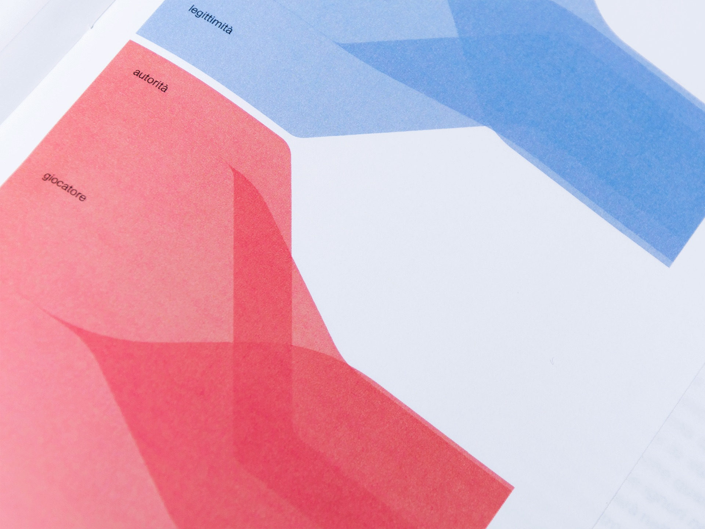
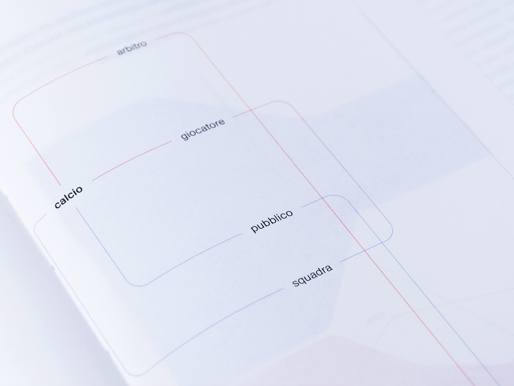

Abstract
Descrizione di una Battaglia is the project for a book that would visually translate the contents of Alessandro Dal Lago's eponymous essay. The foundation for the project's development lies in a concept that the author himself claims to be the pivotal point of his inquiry: namely, epoché. Epoché is a technique deployed in sociology to establish a logical distance from the subject being examined, so that it is possible to observe the "oddities" of an ordinary phenomenon that would otherwise be concealed by the sheen of normality that wraps events taken for granted.
That's the reason why soccer, and the complex system of ritual relationships associated with it, are represented by the terms of the human cardiovascular system. This is a powerful metaphorical framework: the meticulousness of clinical practice provides a seamless solution for formal continuity, respecting the scientific credibility of Dal Lago's sociological studies. At the same time, the image of blood, of its flow within the human body and its gush out of wounds, is as culturally reminiscent of the primordiality that distinguishes the pulses of fans as it is of the violence they are victims or authors of.
[read more...]





